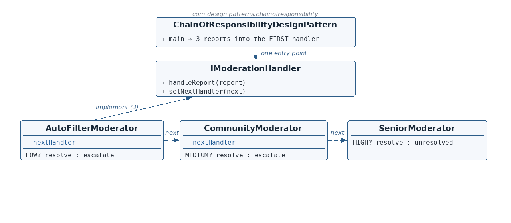

IModerationHandler.java + the request
☕ 4 min read · 🎬 Video walkthrough · 📊 UML diagram · 💻 Runnable code
⚡ In a nutshell — Pass a request along a chain of handlers; each handler decides on its own whether to resolve the request or escalate it.
Pass a request along a chain of handlers; each handler decides on its own whether to resolve the request or escalate it. The sender calls only the first handler and never knows which tier will act.
Content moderation: flagged posts arrive with a severity. LOW-severity reports are resolved automatically by an auto-filter; MEDIUM ones need a community moderator; HIGH ones a senior moderator. The reporting code shouldn't route — it files every report at one entry point, and the moderation chain escalates as needed.
IModerationHandler is the Handler interface: handleReport(report) + setNextHandler(next).Report carries a Severity (LOW/MEDIUM/HIGH) — the data every decision reads.AutoFilterModerator resolves LOW, otherwise escalates (logging the hand-off); CommunityModerator resolves MEDIUM, otherwise escalates; SeniorModerator resolves HIGH — or declares the report unresolvable (the chain's end).
Reading the diagram: the client knows one entry point. All three moderators implement the same handler interface, each holding a next reference (dashed arrows). The per-tier decisions written in each box make it a genuine chain, not a fixed pipeline.
IModerationHandler — Handler interface — handleReport / setNextHandler.Report / Severity — The request and the data driving every decision.AutoFilterModerator — Tier 1 — resolves LOW, escalates otherwise.CommunityModerator — Tier 2 — resolves MEDIUM, escalates otherwise.SeniorModerator — Tier 3 — resolves HIGH; end of the chain.ChainOfResponsibilityDesignPattern — Client — one entry point, three severities.public interface IModerationHandler {
void handleReport(Report report);
void setNextHandler(IModerationHandler nextHandler);
}
public class Report {
private Severity severity; // LOW | MEDIUM | HIGH
...
}
handleReport processes; setNextHandler links. Chains can be re-wired — a tier inserted or removed — without touching any moderator's logic. The report's severity is the only input each decision needs.AutoFilterModerator.java — tier 1@Override
public void handleReport(Report report) {
if (report.getSeverity() == Severity.LOW) {
System.out.println("Auto-filter moderator resolved the report.");
} else if (nextHandler != null) {
System.out.println("-----Escalating report to next moderator: " + nextHandler.getClass().getName());
nextHandler.handleReport(report);
}
}
CommunityModerator.java — tier 2MEDIUM, escalates everything else. Reached only when tier 1 declined.SeniorModerator.java — tier 3@Override
public void handleReport(Report report) {
if (report.getSeverity() == Severity.HIGH) {
System.out.println("Senior moderator resolved the report.");
} else {
System.out.println("Report could not be resolved by any moderator.");
}
}
setNextHandler is a no-op; nothing follows.autoFilterModerator.setNextHandler(communityModerator);
communityModerator.setNextHandler(seniorModerator);
autoFilterModerator.handleReport(new Report(Severity.LOW)); // resolved at tier 1
autoFilterModerator.handleReport(new Report(Severity.MEDIUM)); // tier 1 -> tier 2
autoFilterModerator.handleReport(new Report(Severity.HIGH)); // tier 1 -> tier 2 -> tier 3
setNextHandler instead of constructor wiring? Chains get re-shaped — inserting an ML-moderator tier between auto-filter and community is one line at composition time.Chain Of Responsibility Design Pattern
-- LOW severity report --
Auto-filter moderator resolved the report.
-- MEDIUM severity report --
-----Escalating report to next moderator: ...CommunityModerator
Community moderator resolved the report.
-- HIGH severity report --
-----Escalating report to next moderator: ...CommunityModerator
-----Escalating report to next moderator: ...SeniorModerator
Senior moderator resolved the report.
One entry point, autonomous tiers — severity decides how far a report travels.
👏 Found this useful? Give it a few claps so more developers discover it, and follow for the whole series — every article ships with a UML diagram, runnable code, a narrated video, and a companion PDF. Happy building! 🚀